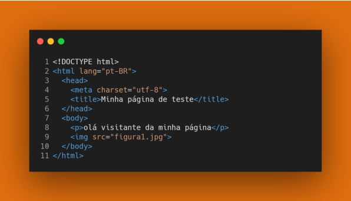
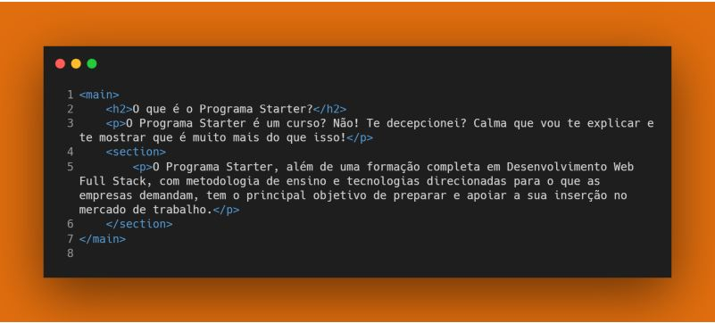
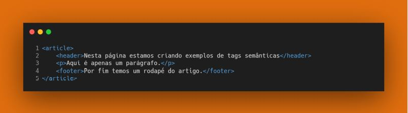

História do HTML
O HTML foi proposto no início de 1990 e recebeu novas funcionalidades ao longo do tempo visando atender às novas exigências de comunicação e representação da informação. Atualmente o padrão HTML 5 é amplamente utilizado, no momento já temos o padrão HTML 5.3, lançado em janeiro de 2021.
Conheça mais sobre o HTML, visitando o site da Organização Mozilla, neste site você vai encontrar um manual completo e detalhado com exemplos: Mozilla.org-HTML
Se desejar praticar e avançar mais em seus estudos o site W3Schools oferece uma ferramenta para codificar e visualizar os resultados: W3Schools.com-HTML
O objetivo do HTML é oferecer um padrão compreensível por nós humanos e que pode ser interpretado pelos navegadores. Um dos fatores responsáveis pelo sucesso do HTML é sua simplicidade de desenvolvimento, pois exige apenas um editor de texto e um navegador web. Além disso, ao navegar por um site qualquer na internet podemos facilmente explorar o código HTML que está sendo apresentado. Para explorar o código de uma página qualquer vamos utilizar o DevTools.
O HTML é uma linguagem interpretada pelos navegadores. Mas o que exatamente significa isso?
Significa que todas as tags que desenvolvemos são executadas e geram algum resultado para ser exibido ao usuário. Isso significa que as tags não são “validadas”, nem mesmo são reportados erros caso ocorram. Este é um fator que define o HTML como linguagem de marcação e não como linguagem de programação. Uma linguagem de programação passa por um processo de validação dos comandos, onde cada um deles é executado podendo ou não gerar uma saída.
De forma resumida isso significa que quando nosso código HTML estiver incorreto, não vai apresentar erro, simplesmente não vai funcionar.
Existem diversos padrões que os programadores podem adotar, então é fundamental você conheça bastante a linguagem HTML pois vai se deparar com códigos desenvolvidos por outros programadores ao longo de sua jornada profissional e antes mesmo de executar o código é importante que você faça a validação do mesmo e entenda o que o código deve realizar.
Introdução à HTML
HTML é uma sigla para representar o termo Linguagem de Marcação de HiperTexto, originado do inglês HyperText Markup Language. Portanto a HTML é uma linguagem para criar documentos com textos e outros elementos do meio digital, tais como imagens, sons e vídeos. Todos estes elementos serão ligados por meio de tags ou elementos, que vamos estudar nesta unidade/disciplina. As tags são recursos fundamentais da HTML. Abaixo segue exemplo de uma tag.
<img src="foto.jpg">
A tag apresentada acima é a tag img, que indica uma abreviação de image, que traduzindo é imagem. Note que a tag img tem o atributo src, que indica uma abreviação de source, que traduzindo é origem. Os atributos são recursos presentes na maioria das tags.
Resumindo o conceito de tag com relação ao HTML:

→ tag: etiqueta, rótulo ou marcação, exemplo <img ...>é um exemplo de tag de imagem
→ atributo: característica que desejamos especificar, geralmente um atributo é seguido por sinal de igualdade, exemplo src=
→ valor: geralmente fica entre aspas duplas. Em alguns casos, o valor pode ficar entre aspas simples, dependendo do padrão adotado. Vamos manter o padrão de aspas duplas.
Estrutura básica
Agora que já sabemos sobre tags, vamos explorar a estrutura básica de um documento HTML. Um documento HTML deve ter a declaração da tag inicial <!DOCTYPE html>, embora um documento HTML possa ser interpretado sem a declaração, ela é altamente recomendada. Abaixo segue a tag DOCTYPE:
A tag DOCTYPE pode ser escrita em minúscula, ou seja, não é case sensitive. Algumas linguagens exigem a escrita usando letras maiúsculas em certas situações e não funcionam caso escrevemos uma letra minúscula no lugar de uma letra maiúscula, por exemplo em JavaScript uma variável definida como pi é diferente de uma variável definida como PI. Podemos afirmar que HTML não é case sensitive, ou seja, tanto faz se escrevermos com letra maiúscula ou minúscula, já a linguagem JavaScript é case sensitive. Sempre que possível vamos obedecer ao padrão e digitar corretamente as letras.
A tag <html> é a primeira a ser aberta, antes dela sempre teremos apenas a tag !DOCTYPE. A tag <html> é fechada na linha 11, da seguinteforma </html>. A tag img não fechamos,apenas abrimos. Mais adiante veremos exemplos de tagimg com fechamento.
A tag <head> é utilizada para definir configurações do cabeçalho de nossa página tais como seu conteúdo, título, palavras-chave e outras configurações que são processadas logo que a página é carregada.
Na tag <head> temos também inclusão de arquivos CSS e JS.
Os títulos são representados dentro da tag <head> e são considerados pelos motores de busca, isso significa que se você deve sempre criar títulos relevantes e criativos para suas páginas.
Um documento HTML deve ter apenas uma tag <html>. Tanto a tag <head> quanto a tag <body> são únicas por padrão.
A próxima tag que vamos explorar é <body>. Nela podemos colocar tudo que desejamos exibir para nosso usuário, tais como textos, figuras e links. No exemplo colocamos dentro da tag <body> a tag <p> que representa um parágrafo no HTML e tag <img> que utilizamos para adicionar uma imagem ao HTML.
Semântica HTML
As tags HTML devem sem utilizadas de forma que seja compreensível para nós seres humanos e por computadores. Dar semântica a um documento significa simplificar sua codificação e fazer com o documento seja compreensível sem muito esforço. As páginas HTML são interpretadas por outras aplicações, pois uma vez estando “hospedadas” e acessíveis, qualquer aplicação pode abrir nossa página e obter as informações que precisa. Para organizar as informações de uma página existe um grupo e elementos, listados abaixo:
<header>
<section>
<article>
<nav>
<aside>
<main>
<figure>
<footer>
<a>
<em>
<strong>
<cite>
<q>
<time>
A descrição e utilização de cada uma dessas tags estará disponivel em nosso Glossário HTML no Class.
Veja Exemplos para cada uma destas tags semânticas:

